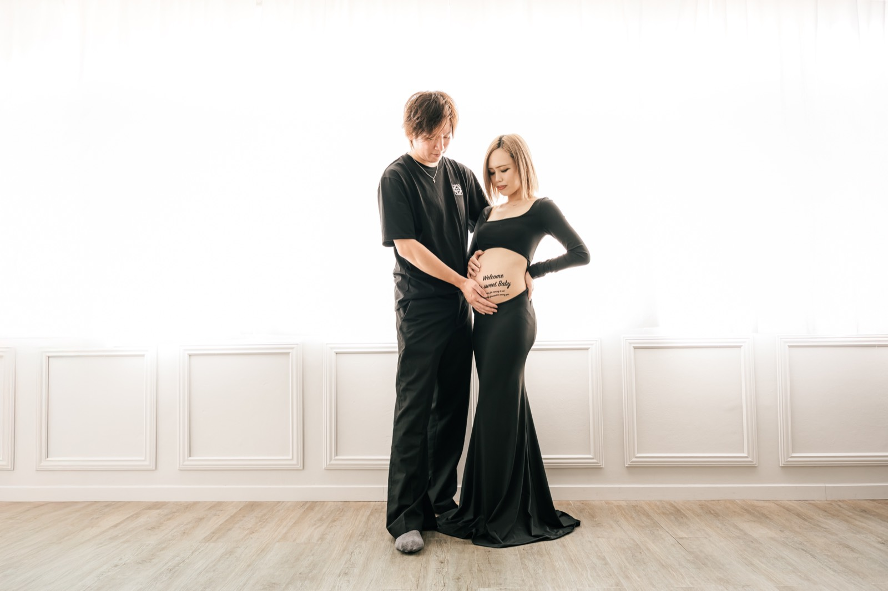

トップに戻る
Maternity plan
マタニティフォト
赤ちゃんに会える日を待つ
今だけの時間を残します
プラン料金・オプション料金・交通費の
合計となります
Plan
プラン料金

ママだけお手軽プラン
¥15,000
- 衣装1着のみ
- ママのみ
- 所要時間 1時間程度
- 撮影データ10枚程度を渡し
家族OK

メモリアルプラン
¥22,000
- 衣装2着までOK
- パパ・上のお子さんもOK
- 所要時間 1.5時間程度
- 全データ納品
撮影場所について
ご希望の場所・ロケーション・レンタルスタジオで撮影可能です。ご相談ください。
レンタルスタジオをご希望の場合は、代金が別途かかります
交通費
西鉄久留米駅からの計算です。高速料金は別途必要です
| 〜5km | 無料 |
| 〜10km | ¥1,000 |
| 〜20km | ¥2,000 |
| 〜30km | ¥3,000 |
| 〜40km | ¥4,000 |
| 〜50km | ¥5,000 |
| 50km〜 | 10kmごとに +¥1,500 |
FAQ
よくある質問
いつ撮影するのがおすすめですか?
お腹のふくらみが分かりやすくなる妊娠7〜9ヶ月頃がおすすめです。体調を見ながら日程を調整します。
体調が優れない日でも大丈夫ですか?
ママの体調を最優先に進めます。当日の変更もご相談いただけますので、無理のない範囲でお願いします。
家族も一緒に写れますか?
メモリアルプランでは、パパや上のお子さんもご一緒に撮影できます。
衣装は自分で用意しますか?
お持ちの衣装で撮影できます。ご希望のイメージがあれば、お気軽にご相談ください。
Flow
撮影までの流れ
1
お問い合わせ
希望日・撮影内容をお知らせください
2
日程調整
体調やご家族のご予定に合わせて調整します
3
撮影
ご希望の場所・スタジオで撮影します
4
納品
編集後、オンラインでデータをお渡しします。
フォトグッズをご注文の方は、納品したデータの中から商品と写真をお選びいただき発注します。データ納品からおおよそ1〜2ヶ月以内に商品をお届けします。